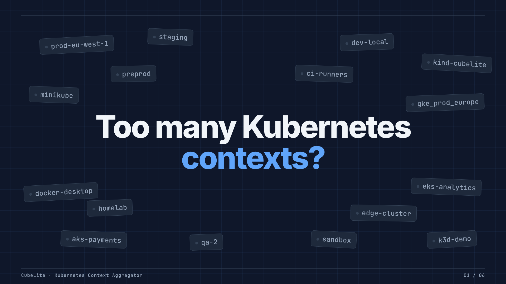
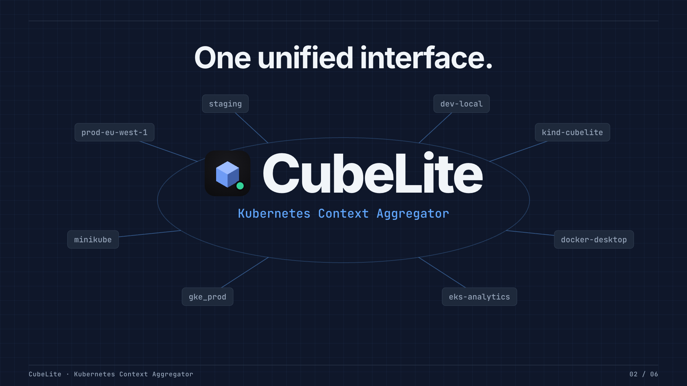
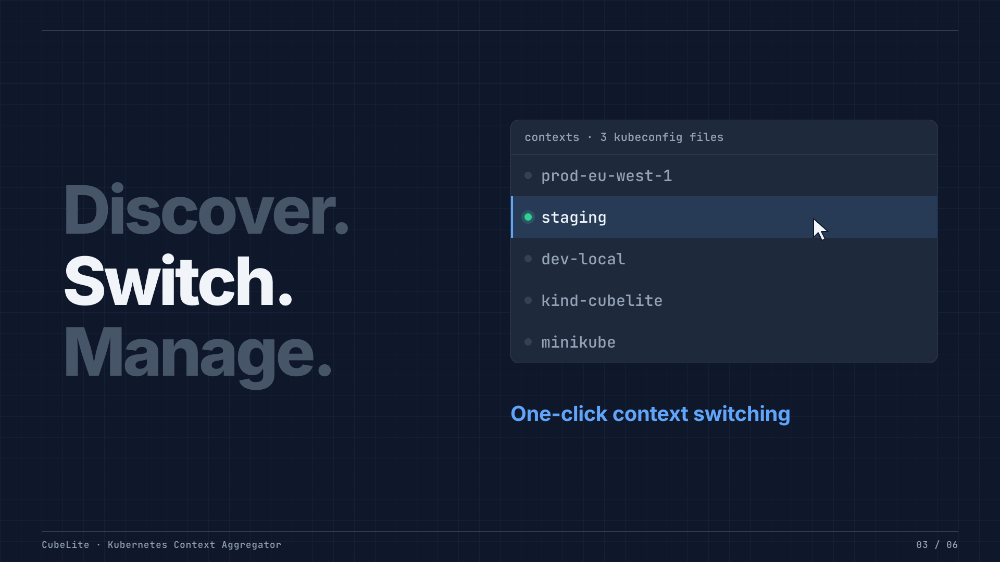
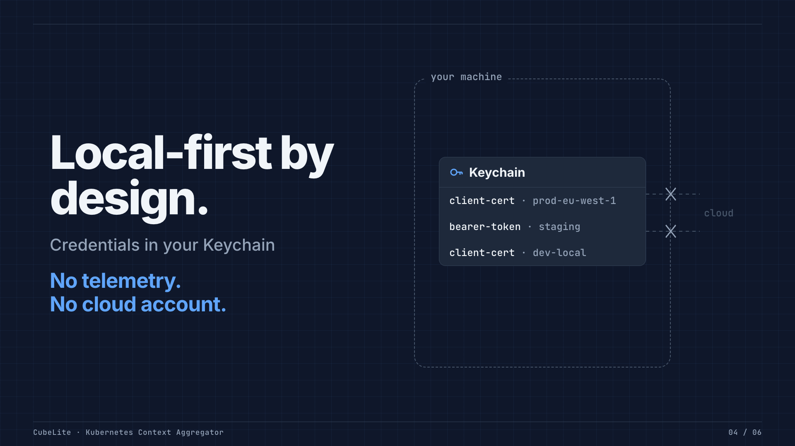
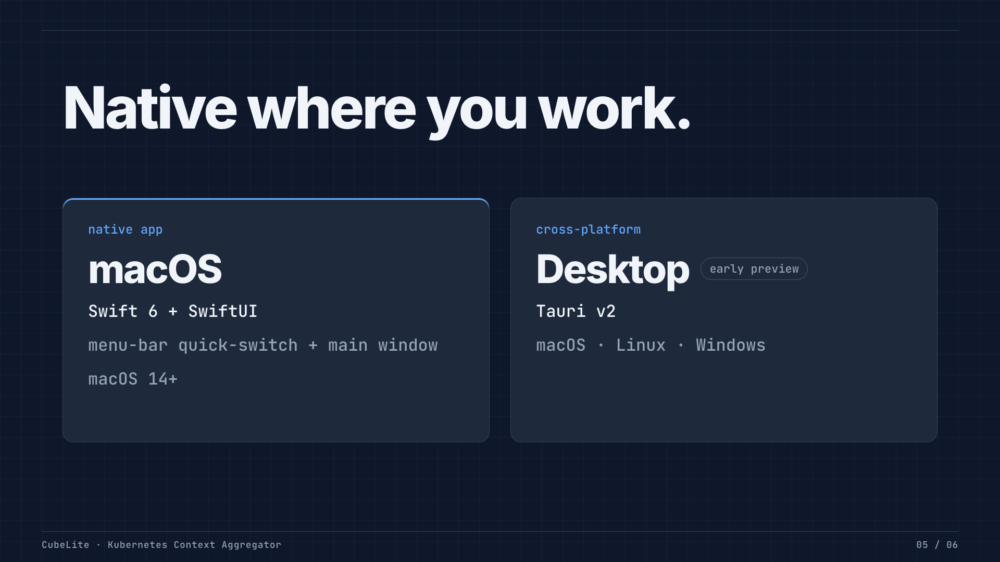
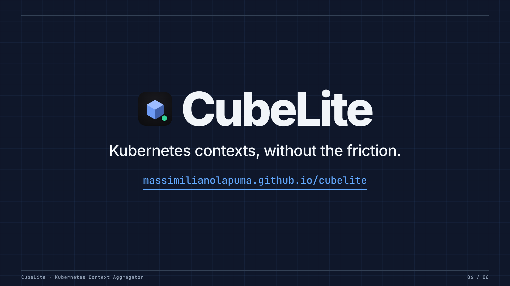

01: Too many contexts
0.0 to 4.0s
Context chips crowd the frame; the question lands; the chips converge into one blue point.

02: One unified interface
4.0 to 9.0s
The point opens into an ordered node system; icon + CubeLite resolve at the hub.

03: Discover. Switch. Manage.
9.0 to 15.0s
Each verb lights in turn with its proof: merged kubeconfigs → one-click switch (shown) → menu-bar quick-switch.

04: Local-first by design
15.0 to 21.0s
Credentials settle into the Keychain inside "your machine"; lines to the cloud are cut at the boundary.

05: Native where you work
21.0 to 26.0s
Two abstract platform cards — native macOS (SwiftUI) and cross-platform Desktop (Tauri, early preview). No invented UI.

06: Without the friction
26.0 to 30.0s
Icon + CubeLite, the tagline, the URL with an underline that draws on; clean fade to dark.